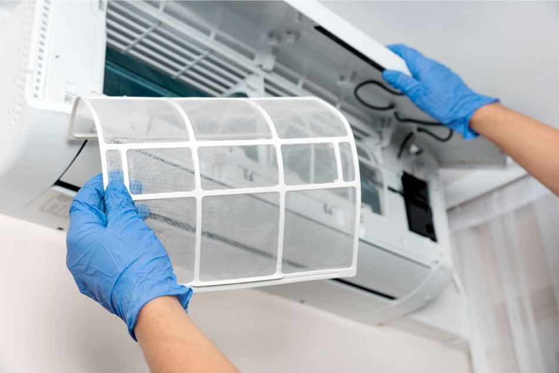

Système mural
Nettoyage et vérification de l’unité intérieure.
- Nettoyage des filtres
- Nettoyage du serpentin intérieur
- Vérification du drainage
- Inspection des composants
- Vérification de la performance

Un entretien régulier préserve la performance, la durée de vie et l’efficacité énergétique de votre appareil.
Nos techniciens certifiés effectuent un entretien complet pour garder votre système en bon état toute l’année, en maison comme en condo.
Un entretien régulier aide à réduire les coûts d’énergie, à prévenir les pannes, à prolonger la durée de vie de l’appareil et à améliorer la qualité de l’air.

Nettoyage et vérification de l’unité intérieure.
Pour les maisons avec conduits de ventilation.
Un entretien est généralement recommandé une à deux fois par année.
Nous convenons d’un moment qui vous convient.
Contrôle des composants intérieurs et extérieurs.
Filtres, serpentin et drainage pour une circulation d’air libre.
Nous validons la performance avant de partir.
En général une à deux fois par année, par exemple avant l’été et avant l’hiver.
Oui. Nous entretenons les systèmes muraux et centraux.
Il réduit les coûts d’énergie, prévient les pannes, prolonge la durée de vie et améliore la qualité de l’air.
Planifiez un entretien. Si le problème persiste, un diagnostic permet d’en trouver la cause.

Licence RBQ 5812-9388-01Entrepreneur certifié par la Régie du bâtiment du Québec
Installation et entretien par des professionnels licenciés.
Votre installation est protégée.
Une équipe locale, de la soumission à l’entretien.
Nous vous accompagnons dans les démarches.